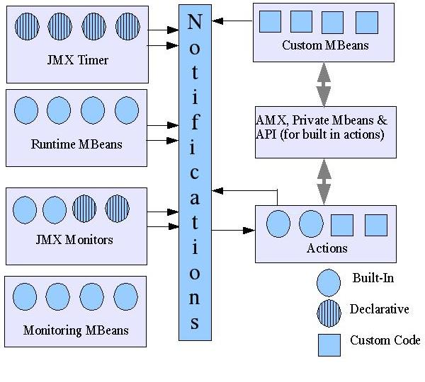
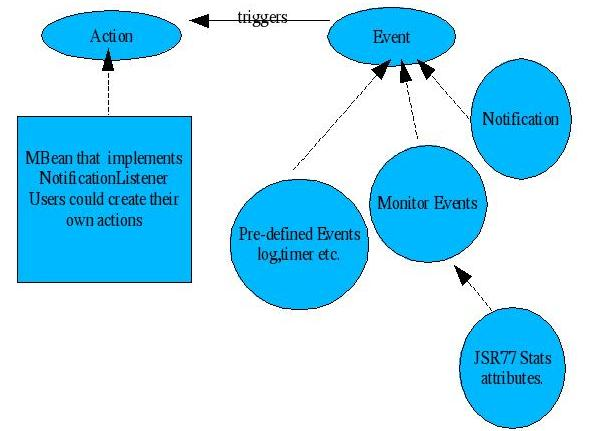
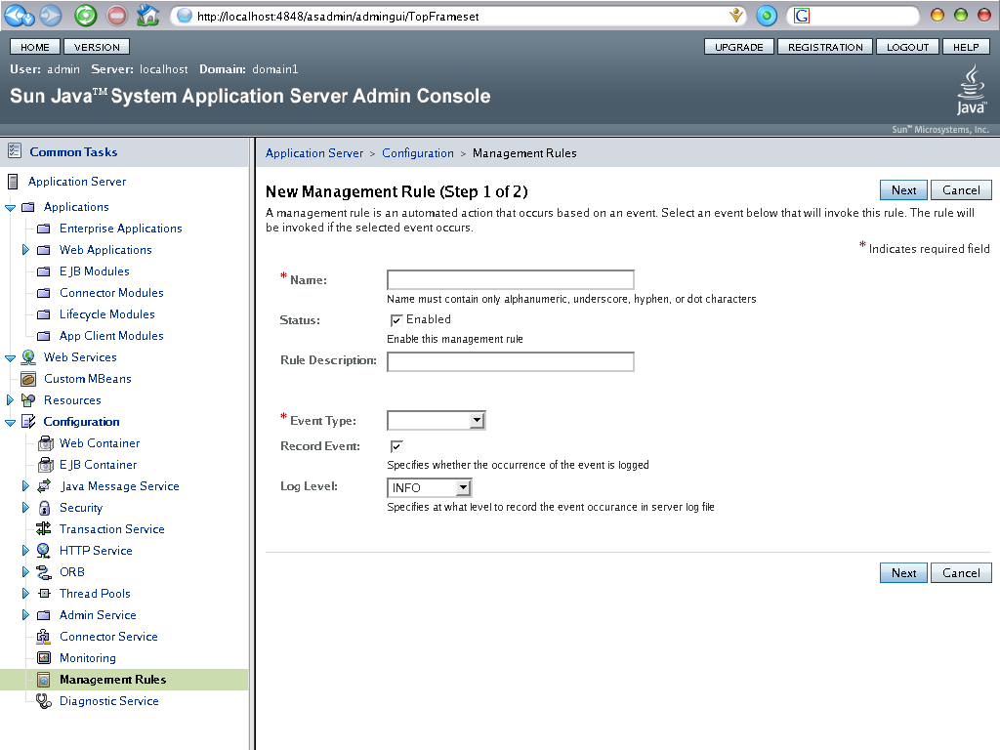
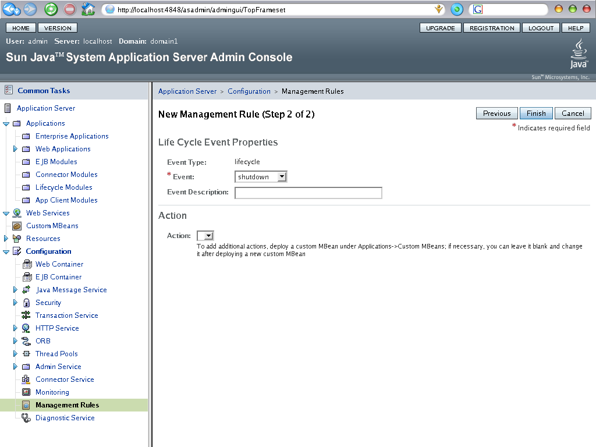

GlassFish
Project - Self Management home page
New
to GlassFish | Community
Guidelines
| Downloads
|
FAQ | How-Tos
Welcome to the Self Management home page. This page is dedicated to
discussing the Self Management framework in GlassFish.
The source code for these features is part of this cvs repository. How
this framework is built in to perform the following tasks of
self-configuring/self-tuning/self-healing is discussed here.
Self Management News
SelfManagement in GlassFish is built on simple concept of
management rules. A management rule is built using standard JMX
infrastructure. Each management rule is comprised of an event and an
optional action. Events and Actions are open ended.
Actions could be one of the pre-defined actions or custom actions
created by the user. Cumbersome monitoring tasks are monitored by
performing actions based on an event triggered. See below for more
information on the design and implementation of this feature.
Page Contents
Overview
Objectives of SelfManagement framework in GlassFish:
- Manage complexity by self-configuring
- Improve ease-of-use by automating mundane management tasks
- Improve performance by self-tuning in unpredictable
run-time conditions
- Improve availability by preventing and recovering
(self-healing) from failures
- Improve security by taking self-protective actions when
security threats are detected
Individual application servers can self-manage the necessary system
administration tasks such as event management by detecting events and
performing actions in response to those events.
Packages related to Self Management
com.sun.enterprise.admin.event.selfmanagement : Event and Listener interface dealing with management-rule element.
com.sun.enterprise.admin.selfmanagement : Event Factory implementations for the different type of events.
com.sun.enterprise.management.selfmanagement : Core class to manage the runtime of the configured management rules
and for the Self Management service.
com.sun.enterprise.management.selfmanagement.reconfig : Handling of dynamic reconfiguration notification
related to management-rule creation, update and deletion.
com.sun.logging.enterprise.system.core.selfmanagement : Log messages used for Self Management.

Figure1: Rules subsystem overview
Design
The infrastructure is a set of management rules. A Management
rule comprises of an event, an action and a configuration associated
with it. Once an event is detected, an action is taken in response to
the event. The configuration is a set of rules specified by the user.
The information is populated to a configuration file (viz., domain.xml).

Figure
2: Self Management Rule Components
The following sections describe each in detail.
Events
An event triggers the action to be executed. A set of events are
provided by default with the glassfish and user could extend the events
by using JMX Notification mechanism. Events can be customized by
changing their parameters. Events can be one of the
following:
Lifecycle events
The event type is "lifecycle".
Required property: "name"
Possible values: "ready", "shutdown", "termination".
Event names mean same as the corresponding events in the
com.sun.appserv.server.LifecycleEvent interface.
Monitor events
Monitoring events provide the capability to monitor an attribute of an
MBean. This also includes the JSR 77 statistics monitoring. The event
type is "monitor".
Properties which are to be set on monitor event type are:
monitortype: Type of the
monitor. Valid values are "countermonitor", "gaugemonitor",
"stringmonitor".
observedobject: object-name of
the mbean to be monitored. (OR) observedmbean: mbean
name of the object to be monitored.
observedattribute: attribute
of the mbean which will be monitored.
initthreshold: Required if the
monitor is of type CounterMonitor or the JSR 77 Statistic field being
monitored is of an integral type containing a count value.
lowthreshold, highthreshold:
Required if the monitor is of type GaugeMonitor or the JSR 77 Statistic
field being monitored is of an integral type containing a gauge value.
numbertype: Required if
monitor is of type CounterMonitor or GaugeMonitor or JSR 77 statistic
field being monitored is of an integral type containing a count/gauge
value. Possible values are "long", "double".
stringtocompare, stringtodiffer:
Required if monitor is of type StringMonitor.
notifymatch, notifydiffer:
Required if monitor is of type StringMonitor. Possible values are
"true" or "false".
granularity: Granularity at
which the monitoring data should be collected (optional, defaults to 10
seconds).
Log events
The event type is "log".
Optional property: "logger", possible values: comma separated list of
logger names, or "*" for all loggers. Default value is "*".
Optional property: "level", possible values: log levels as listed in
java.util.logging.Level. Default value is "INFO".
When the log event triggers an action, log record and other useful data
will be provided to the action as userData of the Notification.
Trace events
The event type is "trace".
Required property: "name" , Possible values:
"ejb_component_method_entry", "ejb_component_method_exit",
"web_component_method_entry", "web_component_method_exit",
"request_start", "request_end".
When a trace event triggers an action, request id, component name and
other useful data will be provided as userData of the Notification.
TraceEventNotification helper class is provided to retrieve relevant
data.
Timer events
The event type is "timer". The Notification subclass is
javax.management.timer.TimerNotification.
Required property: "datestring", possible values: String - mm/dd/yyyy
hh:mm:ss
Optional properties are "pattern" if the date string is specified in
any other format other than given above."period" - possible values are
long/integer for
timer period in milliseconds, "numberofoccurrences" - possible values
are long/integer, "message" - possible value: String.
Notification events
This is a generic JMX event notification mechanism. Any custom MBean,
which can emit a notification can be a notification event.
Actions
An action is a Java MBean object. Custom actions are created and
deployed in the server to perform specific tasks. One example of an
action could be sending the event occurrence to a recipient through an
email. When an event is triggered, the action object is automatically
instantiated. Action MBeans implement
javax.management.NotificationListener interface. An action may be
invoked concurrently and the action implementation may have to take
care of threading issues.
Rules
A rule has two parts - an event to be detected, and an optional action
to
be performed upon detecting the event. The configuration is a set of
rules specified by the user. The information is populated in a
configuration file (viz., domain.xml). The events that are to be
detected and its corresponding actions are included in the management
configuration set.
Following are some examples of rules.
Example of a gauge type of monitor
<management-rule name="Rule1"
enabled="true">
<event level="INFO"
record-event="true" type="monitor">
<property
name="monitortype" value="gaugemonitor"/>
<property
name="lowthreshold" value="10"/>
<property
name="highthreshold" value="90"/>
<property
name="numbertype" value="double"/>
<property
name="observedobject"
value="com.sun.example.mbeans.JVM,server=server"/>
<property
name="observedattribute" value="FreeMemory"/>
</event>
<action
action-mbean-name="CustomBean"/>
</management-rule name>
Example of a statistic monitor
<management-rule name="Rule2"
enabled="true">
<event level="INFO"
record-event="true" type="monitor">
<property
name="monitortype" value="countermonitor"/>
<property
name="initthreshold" value="10"/>
<property
name="numbertype" value="long"/>
<property
name="observedmbean" value="EntityStatsMBean"/>
<property
name="observedattribute" value="ReadyCount.highWaterMark"/>
</event>
<action
action-mbean-name="CustomBean"/>
</management-rule name>
Example of a Lifecycle event
<management-rule name="Rule3"
enabled="true">
<event level="INFO"
record-event="true" type="lifecycle">
<property
name="name" value="termination"/>
</event>
<action
action-mbean-name="CustomBean"/>
</management-rule name>
CLI Commands
MBeans and rules could be created using a Command Line
Interface(CLI). To create an MBean, the syntax is as follows
create-mbean [--terse=false] [--echo=false]
[--interactive=true] [--host localhost] [--port 4848 | 4849]
[--secure | -s] --user admin_user
[--passwordfile file_name] [--name name] [--objectname object-name]
[--target=server] [--attributes
name=value[:name=value]*] implementation-class-name
Example:
create-mbean --host localhost --port 4848
--user admin_user --name MyMBean com.sun.example.event.Example
To create a management rule, the following syntax is followed.
create-management-rule [--terse=false]
[--echo=false] [--interactive=true] [--host localhost]
[--port 4848 | 4849] [--secure | -s] --user
admin_user [--passwordfile file_name] [--ruleenabled=true]
[--ruledescription description] [--action
action-mbean-name]
--eventtype
log|timer|trace|monitor|cluster|lifecycle|notification
[--eventloglevel FINEST | FINER | FINE | CONFIG
| INFO | WARNING | SEVERE | OFF] [--recordevent=true]
[--eventdescription description]
[--eventproperties (property=value[:property=value]*)] [--target
target] rule-name
Example:
create-management-rule --host localhost --port
4848 --user admin_user --action MyActionMBean
--eventtype lifecycle --eventloglevel FINE
--eventproperties name=ready MyRule
GUI
Management Rules could be created using the Graphical User
Interface (GUI). The "Management Rules" option within the GUI displays
the list of existing rules in a tree view. When a rule is clicked
within the tree view, a panel shows the details related to that rule.
To create a new rule, Click on the "New" tab in Application Server > Configuration > Management Rules.
An interactive panel is displayed where details for the fields related
to the rule could be entered. Choose an appropriate event type from the drop-down list.
Click "Next" after entering the required details.

Figure 3: Create New Rule
In the next
page, enter the required event properties of the chosen event.
Depending on the event type chosen,
a list of event properties is displayed for the chosen event.
Different events list different properties.
In the Action section which is below the Event Properties section,
choose an action mbean which is to be called upon rule invocation.
A drop-down box lists all the available action mbeans deployed in the
application server. Any action could be chosen from the list or
custom actions could be created using CLI/GUI and deployed on the
application server and could be used.
To add additional actions, a
custom mbean should be deployed under Custom MBeans in the left pane in
admin console(GUI) or create-mbean command is used in CLI.
Once the details are entered, click "Finish" button to enable the
rule to be created. The properties of rules, such as rule-name or
action mbean, could be modified at any time after creating the rule.

Figure 4: New Management Rule - Step 2
Unit/Acceptance Tests
To run the self management unit tests, do the following.
- Check out the appserv-tests module if you do not already
have it.
- Go to devtests/selfmanagement
- Run: ant all
This will build and run all the selfmanagement unit tests.
Supporting
Documentation
This sections
contains
pointers to useful documents and information
about Self Management in GlassFish.
Specifications:
Tech
Tips:
Example rule and related code
Example of Monitoring the free runtime memory of the JVM can be found here.
ToDo List
- Ideas for events and actions
- Suggest New Rules